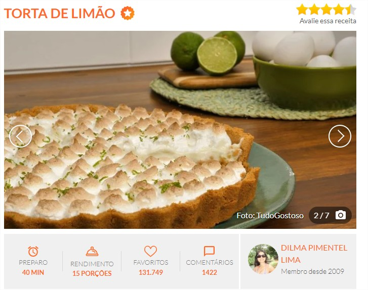

Tela inicial

INGREDIENTES
Massa:
- 200 g de biscoito de maisena
- 150 g de margarina
Recheio:
- 1 lata de leite condensado (395 g)
- 1 caixa de creme de leite (200 g)
- suco de 4 limões
- raspas de 2 limões
Cobertura:
- 3 ou 4 claras de ovo
- 3 colheres (sopa) de açúcar
- raspas de 2 limões para decorar
- Comprar ingredientes
MODO DE PREPARO
Massa:
- Triture o biscoito de maisena em um liquidificador ou processador.
- Junte a margarina e bata mais um pouco.
- Despeje a massa em uma forma de fundo removível (27 cm de diâmetro).
- Com as mãos, espalhe os biscoitos triturados no fundo e nas laterais da forma, cobrindo toda área de maneira uniforme.
- Leve ao forno médio (180° C), preaquecido, por aproximadamente 10 minutos.
Recheio:
- Bata todos os ingredientes no liquidificador (exceto as raspas de limão) até obter um creme liso e firme.
- Recheie a massa já assada e leve à geladeira por 30 minutos.
Cobertura:
- Bata as claras em neve e acrescente o açúcar.
- Misture até obter um ponto de suspiro e leve ao forno até dourar.
- Desenforme a torta (sem retirar o fundo falso), despeje a cobertura e acrescente as raspas de limão.